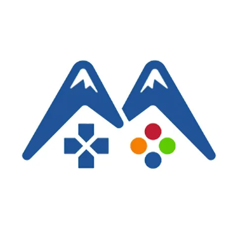

Trước khi đi thực tập mảng IT và Web, mình từng làm công việc Chăm sóc khách hàng và tư vấn kỹ thuật tại MOLA INTERACTIVE trong giai đoạn 2023–2024. Nhìn bề ngoài, hỗ trợ người chơi game có vẻ khác lập trình phần mềm, nhưng thực tế quãng thời gian này lại rèn cho mình nền tảng rất vững khi tiếp nhận sự cố kỹ thuật về sau.
1. Người dùng phản ứng mạnh vì trải nghiệm bị gián đoạn
Khi một lỗi nạp gói, kẹt đăng nhập hay mất kết nối máy chủ xảy ra đúng thời điểm người chơi đang thi đấu hoặc tham gia sự kiện, tin nhắn gửi về bộ phận hỗ trợ thường rất căng thẳng. Nếu người tiếp nhận chỉ nhìn vào câu chữ khó nghe, cuộc trao đổi sẽ nhanh chóng đi vào bế tắc.
Bài học đầu tiên mình học được là tách hai việc ra rõ ràng: ghi nhận cảm xúc của người dùng trước, rồi tập trung thu thập đủ dữ liệu kỹ thuật (mã tài khoản, thời điểm lỗi, ảnh chụp màn hình, thiết bị sử dụng) để chuyển đúng bộ phận xử lý.

2. Quy trình phân loại giúp không bỏ sót ca khẩn
Vào những lúc lượng yêu cầu tăng đột biến sau bản cập nhật mới, xử lý tuần tự theo cảm tính rất dễ bỏ lỡ các trường hợp ảnh hưởng đến giao dịch hoặc bảo mật tài khoản. Tụi mình thường chia ticket theo mức độ ưu tiên:
- Nhóm ưu tiên cao: Lỗi giao dịch, mất quyền truy cập tài khoản hoặc sự cố diện rộng khiến nhiều người dùng không đăng nhập được.
- Nhóm cần kiểm tra kỹ thuật: Xung đột cấu hình thiết bị, mạng nội bộ của người dùng yếu hoặc cần tái hiện lại bước gây lỗi để báo team dev.
- Nhóm hướng dẫn thao tác: Thắc mắc về thể lệ sự kiện, cách liên kết tài khoản hay đổi mật khẩu an toàn.
3. Minh bạch tiến độ quan trọng hơn lời hứa chung chung
Điều khiến người dùng mất kiên nhẫn nhất không phải là chờ đợi, mà là im lặng. Thay vì trả lời cho qua rằng "bên mình đang kiểm tra" rồi để trôi, một câu phản hồi đúng hẹn như xác nhận đã kiểm tra đến bước nào và dự kiến thời điểm cập nhật tiếp theo giúp giảm áp lực cho cả hai phía.
Xử lý sự cố tốt không phải là cố chứng minh hệ thống không sai, mà là giúp người gặp vấn đề hiểu rõ tình huống đang ở đâu và giải pháp tiếp theo là gì.
4. Cầu nối sang công việc IT HelpDesk và phát triển sản phẩm
Khi bước vào kỳ thực tập IT HelpDesk tại Hyundai Miền Nam, thói quen đặt câu hỏi đúng trọng tâm và bình tĩnh tóm tắt nguyên nhân lỗi đã giúp mình hòa nhập rất nhanh. Với một người làm kỹ thuật trẻ, khả năng lắng nghe người dùng cuối nói đúng ngôn ngữ bình dân rồi dịch ngược lại thành thông tin kỹ thuật rõ ràng là kỹ năng có giá trị lâu dài.
— Nguyễn Thành Luân, ghi chú từ giai đoạn làm việc tại MOLA INTERACTIVE